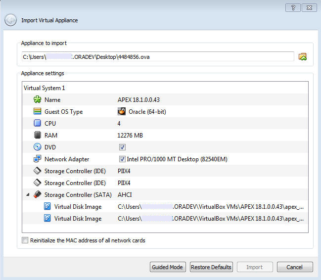
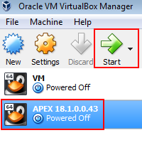

Oracle Application Express 18.1: Using REST Enabled SQL Service
Reference (1 of 4)
Before You Begin
This 10 minute tutorial shows you how to install an Oracle VM
VirtualBox and import a pre-built VM in to the
VirtualBox. This is the first tutorial in the series
Oracle Application Express 18.1: Using REST Enabled SQL
Service Reference. Read the tutorials in sequence:
Oracle Application Express 18.1: Using REST Enabled
SQL Service Reference (1 of 4)
This is part of the environment setup and is a prerequisite for
the tutorials in this series. The pre-built virtual machine Database
App Development VM contains Oracle Database and Oracle
Application Express 18.1 installed.
What Do You Need?
Install the latest version of Oracle VM VirtualBox
Download and import the Database App Development VM
in to the Oracle VM VirtualBox
On the Downloads page, download the Oracle
VM VirtualBox Base Packages installer, as applicable.
Run the installer to install the Oracle VM VirtualBox.
Import
the Database App Development VM
To import the Database App Development VM into the Oracle VM
VirtualBox:
Download the Database App Development VM from the Oracle Application Express Hands on Lab
page. Note: Since this is a file of 8 GB, it will
take some time for the download to complete.
Once the download is complete, import the Database App
Development VM (.ova file) into the Oracle VM
VirtualBox.
Open the Oracle VM VirtualBox and under File,
click Import Appliance.
In the Import Virtual Appliance dialog, click and navigate to the
location where you have downloaded the .ova file. Once you
locate the file, the components and details of the VM display
in the Import Virtual Appliance dialog, as shown in the
screenshot. Click Import.  Description
of the illustration import_ova.png
Once the import completes, the VM displays in the left pane
of the Oracle VM VirtualBox. Select the VM and click Start
to run the Database App Development VM. Description
of the illustration vm_in_vbox

 Before You Begin
Before You Begin Install
the Oracle VM VirtualBox
Install
the Oracle VM VirtualBox  Import
the Database App Development VM
Import
the Database App Development VM